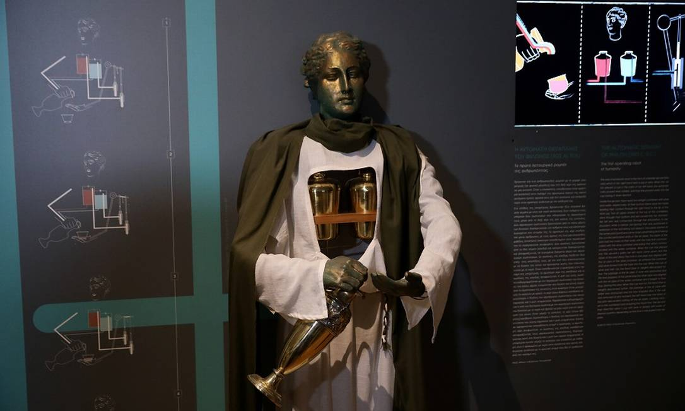
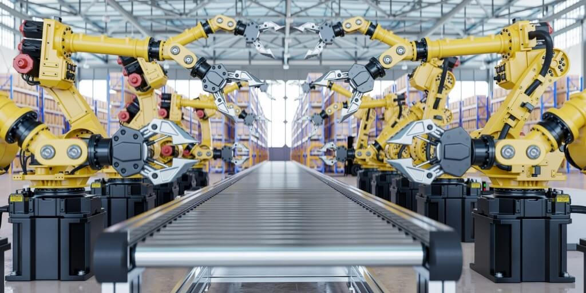

CONCEITOS DA ROBÓTICA
Robótica base
Robótica é um ramo educacional e tecnológico que trata de sistemas compostos por partes mecânicas automáticas em conjunto com circuitos integrados, tornando sistemas mecânicos motorizados controlados por circuitos elétricos e inteligência computacional. A robótica é objeto de estudo de diversas áreas: computação, aeroespacial, mecânica, automação, elétrica, etc.
Aplicações da robótica
À medida que mais e mais robôs são projetados para tarefas específicas, este método de classificação torna-se mais relevante. Por exemplo, muitos robôs são projetados para trabalhos de montagem, o que pode não ser facilmente adaptável para outras aplicações. Eles são chamados de “robôs de montagem”. Para soldagem por costura, alguns fornecedores fornecem sistemas de soldagem completos com o robô, ou seja, o equipamento de soldagem junto com outras instalações de manuseio de materiais, como mesas giratórias, etc. como uma unidade integrada. Tal sistema robótico integrado é chamado de “robô de soldagem”, embora sua unidade manipuladora discreta possa ser adaptada a uma variedade de tarefas. Alguns robôs são projetados especificamente para manipulação de cargas pesadas e são rotulados como "robôs para serviços pesados".
Causa e efeito
Cada vez mais as pessoas utilizam os robôs para suas tarefas, como por exemplo o robô aspirador, e robôs para cirurgias médicas. Esta tecnologia, hoje adaptada por muitas fábricas e indústrias, tem obtido, de modo geral, êxito em questões como redução de custos, aumento de produtividade e redução de problemas trabalhistas. Contudo, apesar das vantagens, os robôs acabam trazendo outros problemas específicos, como a demissão de vários funcionários humanos.
ROBÓTICA CLÁSSICA

Origem da Robótica
Grécia Antiga: Primeiros dispositivos mecânicos criados por inventores como Arquitas de Tarento e Heron de Alexandria.
Era Renascentista: Projetos de máquinas e leões mecânicos esboçados por Leonardo da Vinci no século 15.
Século 18: Relojoeiros europeus construíram bonecos complexos capazes de se mover e escrever, funcionando puramente através de engrenagens, cordas e sistemas mecânicos.
Atualizado há 3 minutos

Origem da Palavra e da Ficção
1920-1921: O escritor tcheco Karel Čapek utilizou pela primeira vez o termo "robô" na peça de ficção científica R.U.R. (Rossum's Universal Robots). O termo foi sugerido por seu irmão, Josef Čapek, a partir da palavra tcheca robota, que significa trabalho forçado ou servidão.
1942: Isaac Asimov, amplamente considerado o pai espiritual da robótica moderna, introduziu formalmente o termo "robótica" e formulou as Três Leis da Robótica em suas histórias.
Atualizado há 3 minutos

Robótica Industrial
1954-1958: George Devol patenteou o primeiro braço mecânico programável, o Unimate. Em 1956, uniu-se a Joseph Engelberger para fundar a Unimation, a primeira empresa de robótica do mundo.
1961: O Unimate foi instalado na linha de montagem da General Motors, tornando-se o primeiro robô industrial em atividade.
Décadas de 1970 a 1990: A chegada dos microprocessadores expandiu a autonomia dos robôs na medicina, exploração espacial e indústrias.
Atualizado há 3 minutos
ROBÓTICA ATUAL
A robótica atual avançou em um nivel que existem maquinas que podem andar sem nenhum operador controlando, códigos que tem acessos a bancos de dados extremamente extensos, sistemas de seguranças impenetraveis e a baratização de tecnologia.

Aplicação nas escolas:
Hoje em dia, nas escolas de hoje ensinam sobre a robótica, programação e outras ferramentas que envolve com os computadores. E que acaba mostrando que a cada dia a tecnologia mais avançada fica mais acessivel para a população comum nos dias de hoje.
A "super automação":
Nos dias de hoje existem máquinas que substituem pessoas em empregos faceis e perigoosos, como:
artistas;
cineastas;
operadores de telemarkiting;
recepcionistas;
montadores de peças;
entre outros.

A criação de novos empregos:
Com o avanço da tecnologia, novos empregos voltados a área de arrumar e criar tecnologias foram criados e hoje em dia esses emprecos foram crecendo até chegar em um ponto que sem esses empregos é impossivel uma nação crecer. Como:
engenheiro de prompt;
cientista de dados;
engenheiro de machine leaning;
anotador de dados;
ente outros.
Etec de Hortolândia 2026 © Todos os direitos reservados Trabalho acadêmico sem fins lucrativos.
TOPO